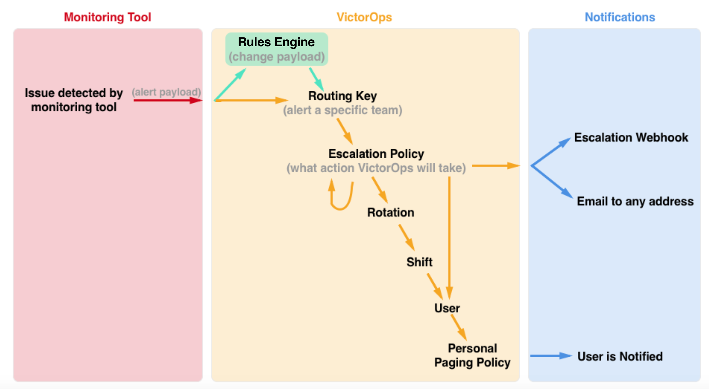
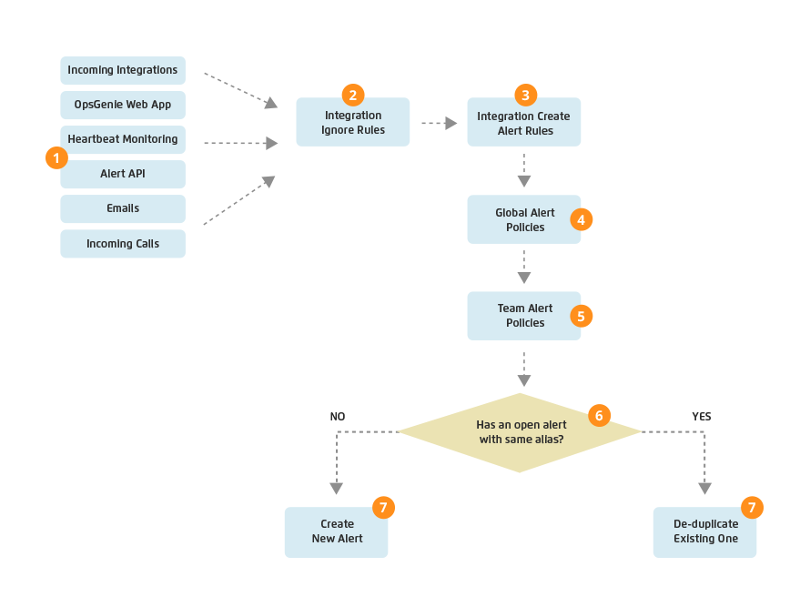
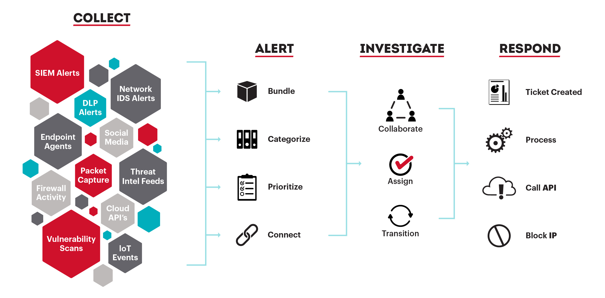

告警管理工具调研
张雪松
2019-11-14
SaaS产品:
- PagerDuty
- Opsgenie
- VictorOps
- OneAlert (国内)
开源工具:
- Cabot (inactive)
- Openduty (archived)
- Cyphon
- Alerta
- Prometheus Alert Manager
SaaS产品

PagerDuty
- incident management platform (事件管理平台)
- incident != alert
概念: incident, alert, service, team, user

理解概念 - Alert
- alerts 聚合为 incident
- user 响应 incident，不响应 alerts
- alert 状态：triggered, resolved
- alert 不能认领
理解概念 - Incident
- 代表一个需要解决的问题
- incident 状态: triggered, acknowledged, resolved
- user 可以认领 incident，也可以取消认领
- incident 支持合并
理解概念 - Service 和 Team
- Service: A service may represent an application, component, or team you wish to open incidents against. When you create services in PagerDuty, they should reflect a service in your infrastructure.
- service 和 team, 支持不同的告警分派给不同的团队
- 一个 service has_many integrations (API, email, Prometheus, Zabbix, New Relic, ...)
理解概念 - On-call Schedule 和 escalation policy

PagerDuty - 告警去重和分组
- 字段去重(dedup_key)
- 智能分组
PagerDuty - 通知方式及扩展
- 支持的通知方式：email, SMS, phone, push notification，以及webhook
- 通过 webhook 支持 custom incident actions
VictorOps
- 没有 service 的概念，但是有 team 的概念，支持把不同的告警分发给不同的 team
- 其它概念与 PagerDuty 类似，也是以 incident 为处理核心
- entity_id 相同的 alerts 聚集为一个 incident
VictorOps - 告警流程

VictorOps - 告警去重
- 只能按照字段去重
Opsgenie
- 核心是 alert，不是 incident
- 企业版引入了 service 和 incident 的概念
- 对于 incident 的理解是故障，特殊的告警
- 只能按照字段去重
Opsgenie - 创建告警流程

Cyphon

后续建议
- 明确需求
- 明确告警的处理流程
- 推荐阅读 PagerDuty 的知识库，了解最佳实践
- 开源产品推荐深入研究 Alerta 和 Prometheus Alert Manager，但它们的弱点是通知方式